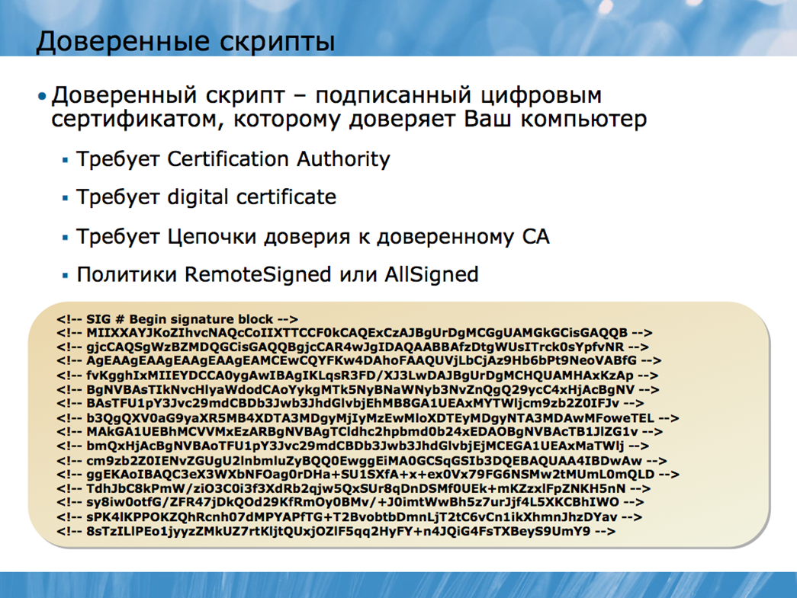

Несмотря на то, что Windows PowerShell® - это отличная оболочка с интерфейсом командной строки, постоянный набор длинных команд вручную, во-первых, отнимает много времени, а во-вторых, не гарантирует отсутствие ошибок. Поэтому скрипты Windows PowerShell дают возможность запускать последовательную цепочку команд много раз, что избавляет от необходимости набирать эти команды вручную каждый раз. Также скрипты обеспечивают простой способ автоматизации длинных цепочек команд или задач, которые требуют логических решений, повторяющихся действий и.т.д.
Выполнение скрипта Windows PowerShell контролируется набором объектов, которые по умолчанию конфигурируются в безопасном состоянии. Когда вы начнете работать со скриптами, вам, возможно, придется изменить конфигурацию некоторых из этих объектов, исходя из особенностей выполнения ваших скриптов, а также политики безопасности вашего окружения.
Объекты безопасности скриптов для Windows PowerShell созданы специально для предотвращения возникновения проблем с безопасностью скриптов, которые могут возникнуть при использовании более старых технологий, таких как Microsoft® Visual Basic® Scripting Edition (VBScript). Windows PowerShell по умолчанию хранит их в безопасном состоянии, позволяя при необходимости менять это состояние в соответствии с вашими скриптовыми потребностями или для обеспечения выполнения различных задач, связанных с безопасностью.
IT-индустрия накопила обширный опыт, связанный с проблемами безопасности, которые могут создавать скриптовые языки. Главная проблема безопасности состоит в том, что скрипт представляет собой простейший способ внедрения вредоносного ПО или вируса в ваше окружение, в первую очередь, из-за того, что некоторые пользователи используют сценарии, не понимая, к чему именно это может привести или же вовсе не отдавая себе отчет в том, что они используют сценарии.
Объекты безопасности Windows PowerShell предназначены для того, чтобы создать «безопасное по умолчанию» окружение, в котором пользователи не смогут случайно использовать сценарии. Впрочем, нельзя сказать, что оболочка делает абсолютно невозможным использование сценариев пользователями. Просто по умолчанию это будет сделать сложно, по крайней мере, если пользователь не осознает, что именно он делает. Однако конфигурация настроек по умолчанию часто оказывается неудобной для тех, кто часто пользуется сценариями, поэтому, оболочка предусматривает возможность изменения конфигурации. В результате такой реконфигурации вредоносным скриптам становится проще проникнуть в ваше окружение, поэтому, оболочка предлагает ряд специальных настроек, которые позволяют поддерживать баланс между удобством и безопасностью.
Оболочка предлагает три ключевых объекта безопасности, имеющих отношение к скриптам.
• Расширение файла .ps1, используемое для идентификации сценариев Windows PowerShell регистрируется в Microsoft Windows® как невыполнимый тип файла. По умолчанию, двойной клик по файлу с расширением .ps1 не запускает скрипт (хотя он может открыться редакторе, например, Windows Notepad или Windows PowerShell ISE).
• Оболочка не ищет скриптовые файлы в текущем каталоге. Так, если вы наберете myscript в оболочке, она не откроет файл myscript.ps1, который может храниться в текущей директории. Вместо этого вам придется указать точный путь к файлу, например, ./myscript. Это позволяет предотвратить атаки, получившие название «команда хакеров», когда вместо внутренней команды выполняется сценарий, имеющий аналогичное название.
• Внутри оболочки есть скрипт под названием Execution Policy, который определяет перечень разрешенных сценариев. По умолчанию разрешенные сценарии отсутствуют.
Очень важно понимать, что не стоит менять конфигурацию настроек безопасности оболочки до тех пор, пока вы не будете отдавать себе полный отчет о возможных последствиях. Ваша организация должна адаптировать настройки безопасности Windows PowerShell, не нарушая оптимальный баланс между безопасностью и удобством.
Политику выполнения внутри оболочки можно изменить тремя способами:
• Групповой политикой. Загружаемый административный шаблон групповой политики доступен на http://www.microsoft.com/downloads /details.aspx?displaylang=en&FamilyID=2917a564-dbbc-4da7-82c8-fe08b3ef4e6d; этот шаблон встроен в Windows Server 2008 R2. Любые настройки, заданные групповой политикой, доминируют над любыми локальными настройками.
• Администратором. Запуск командлета Set-ExecutionPolicy позволяет администратору изменить политику выполнения внутри оболочки на данном компьютере, при условии, что компьютер не находится под управлением настроек групповой политики, как было описано выше. Политика выполнения системы хранится в реестре HKEY_LOCAL_MACHINE, который обычно пишется только администратором локального компьютера.
• Пользователем. Пользователи могут работать в Windows PowerShell, используя powershell.exe и параметр командной строки, который меняет политику выполнения на время текущей сессии и доминирует над любыми локальными настройками.
Сам факт, что пользователям разрешается менять установленные администратором настройки политики выполнения, может показаться странным, но не забывайте, что политика выполнения создана с целью предотвращения случайного использования сценариев. Она не ставит своей целью запретить опытным пользователям работать со сценариями, но защищает от случайного запуска скриптов, который может произойти без ведома пользователя. Запуск Powershell.exe и использование параметра командной строки явно не относится к тем действиям, которые можно с легкостью осуществить по незнанию.
Всего существует пять настроек политики выполнения:
• Ограниченные (Restricted). Такие настройки используются в Windows PowerShell по умолчанию. При этом сценарии не выполняются, за исключением некоторых скриптов с цифровой подписью от Microsoft, которые содержат информацию о конфигурации оболочки по умолчанию.
• С подписью для удаленных файлов (RemoteSigned). Эти настройки разрешают выполнение всех сценариев. Однако удаленные файлы – загруженные из Интернета через Internet Explorer, переданные по электронной почте через Microsoft Office Outlook или по сети должны иметь цифровую подпись надежного поставщика.
• С подписью для всех файлов (AllSigned). Такие настройки позволяют выполнение любых сценариев при условии, что они имеют цифровую подпись надежного поставщика.
• Неограниченные (Unrestricted). Эти настройки позволяют выполнение любых сценариев.
• Обходные (Bypass). Такие настройки позволяют полностью обойти политику выполнения и разрешают выполнение всех сценариев. Предназначены они в первую очередь для разработчиков программного обеспечения, которые встраивают оболочку в другие приложения и планируют создание собственной модели безопасности, вместо используемой в оболочке по умолчанию.
Продвинутого пользователя установленная политика выполнения не остановит от использования сценариев в Windows PowerShell. Но это и не является целью политики выполнения. Точно так же политика выполнения не является формой защиты от вредоносных скриптов. Политика выполнения лишь позволяет предотвратить случайный запуск сценариев пользователями по незнанию, а также помогает определить, какие сценарии являются «надежными» и более безопасными.
Помните, что ни один пользователь не может использовать скрипты оболочки для выполнения задач, на которые он не имеет полномочий. Другими словами, пользователь, не являющийся администратором, не сможет запустить сценарий удаления всех пользователей из Active Directory, поскольку у него нет прав на это. Возможность запустить сценарий не дает пользователю больше полномочий, чем он имеет.
Два вида настроек политики выполнения - RemoteSigned и AllSigned используют цифровые сертификаты и обладают уровнем доверия, позволяющим идентифицировать «надежные» сценарии.
Итак, что такое доверие?
Доверие начинается с корневого центра сертификации или root CA. Существуют публичные CA и частные, которые оказывают услуги за определенную плату. У многих компаний есть свои собственные CA. Когда вы говорите, что доверяете данному CA, это означает, что вы ознакомились с его политикой проверки подлинности людей или компаний, которым CA выдает цифровые сертификаты.

Цифровой сертификат – это форма цифрового удостоверения личности. Цифровой сертификат удостоверяет подлинность или реальное существование человека или компании, но степень доверия этому удостоверению зависит от того, насколько вы доверяете данному центру сертификации. Другими словами, если компания связывается с вами в режиме онлайн и сообщает, что она является корпорацией Microsoft, вы должны проверить ее цифровой сертификат. Если сертификат подтверждает, что компания действительно является корпорацией Microsoft, вы должны проверить, кем был выдан этот сертификат, и доверяете ли вы этому центру сертификации.
Если вы уверены, что центр сертификации провел достаточно тщательное изучение для того, чтобы удостовериться в подлинности заявлений данной компании, значит, вы доверяете этому центру сертификации. Если этот сертификат использован для цифровой подписи сценария, вы также доверяете этому сценарию. Это не означает, что данный сценарий имеет какие-либо преимущества или не содержит вредоносных программ. Это означает, что вы просто можете идентифицировать того, кто подписал данный сценарий, а «надежная» подпись гарантирует, что скрипт не был изменен, поскольку имеет цифровую подпись.
Цифровая подпись производится с помощью ключа шифрования, который является частью цифрового сертификата. Подпись включает информацию о сертификате, в том числе, о подлинности владельца сертификата. Также подпись содержит зашифрованную информацию, которая может быть использована для выяснения содержимого скрипта. Если подпись и содержимое скрипта совпадают, вы знаете, кто подписал скрипт, и знаете, что скрипт не изменился с того времени, как был подписан. Опять же, это не означает, что скрипт является безопасным – просто в случае, если он окажется вредоносным, то вы сможете, используя информацию сертификата, выследить того, кто его подписал.
Если вы хотите посмотреть, как выглядит цифровая подпись, запустите в Windows PowerShell команду: type $pshome/types.ps1xml. Информация в самом конце файла и будет являться цифровой подписью. Проверить статус цифровой подписи файла можно с помощью команды get-authenticodesignature $pshome/types.ps1xml.
Чтобы подписать скрипт, вам нужно в первую очередь получить цифровой сертификат доверия. Получить его можно в публичных или частных центрах сертификации. Публичные центры сертификации обычно взимают ежегодную плату за сертификат. К частным центрам сертификации относятся центры, принадлежащие определенной компании – они обычно основываются на Windows Certificate Services или другом продукте управления сертификатами.
Вам понадобится сертификат класса 3, также известный как сертификат шифрования подписи. В публичных центрах сертификации они обычно стоят дороже, чем сертификаты класса 1, необходимые для кодирования или подписи электронной почты, а также требуют более тщательной проверки для идентификации личности. Многие центры сертификации предлагают другие варианты сертификатов для шифрования подписи, но вам нужен сертификат Microsoft AuthentiCode.
Также вы можете сгенерировать сертификат локально с помощью инструмента MakeCert.exe, который является частью Windows Platform SDK. Чтобы узнать о MakeCert.exe и о том, как им пользоваться, запустите в Windows PowerShell команду:
Help about_signing
Локальный сертификат может использоваться только на данном локальном компьютере. Скрипты, подписанные с помощью этого сертификата, могут выполняться только на этом компьютере.
После того, как вы установили сертификат, вам необходимо запустить командлет Set-AuthenticodeSignature, чтобы прикрепить подпись к сценарию. Раздел справочника, посвященный этому командлету, содержит описание деталей его использования и примеры.
Прочитайте справочные материалы по Set-AuthenticodeSignature и изучите некоторые его опции. Придумайте несколько примеров того, как можно использовать его для создания подписи к скрипту.
Скрипт – это не что иное, как текстовый файл, содержащий одну или несколько команд, которые выполняются последовательно. Проще всего создать базовый скрипт посредством копирования и вставки команд из командной строки в текстовый файл.
Скрипты – это текстовые файлы с расширением .ps1. Эти файлы содержат одну или несколько команд, которые оболочка должна выполнять в определенном порядке. Вы можете редактировать скрипты в Windows Notepad, но Windows PowerShell ISE предлагает более удобный способ редактирования. В нем вы можете печатать команды в интерактивном режиме, немедленно просматривать результаты и вставлять эти результаты в скрипт для долгосрочного использования. Или вы можете набирать команды непосредственно в скрипт, выделять необходимые и затем с помощью клавиши F8 требовать у оболочки выполнения выделенных задач. Если результат вас удовлетворил – просто сохраняете скрипт.
Сторонние поставщики программного обеспечения часто предлагают различные коммерческие и бесплатные редакторы, которые, по их словам, обеспечивают большее удобство при написании сценариев. Честно говоря, существует очень немного различий между тем, что вы можете сделать в сценарии и тем, что вы можете сделать в командной строке. Команды точно так же работают в сценарии, что означает, что вы можете просто вставлять в текстовый файл команды, скопированные из командной строки.
Написание сценария во многом упрощается, когда вы собираете его из уже написанных и проверенных команд. Для этого существует три техники:
• Запускать команды в окне консоли, после чего копировать и вставлять проверенные команды в сценарий.
• Запускать команды в Windows PowerShell ISE, после чего копировать и вставлять проверенные команды в сценарий.
• Писать команды непосредственно в сценарии, в Windows PowerShell ISE и проверять их путем выделения и нажатия F8. если команда работает, значит сценарий уже готов и его можно сохранять.
Сторонние скриптовые редакторы обычно также предлагают различные способы быстрого переноса команд из командной строки в файл сценария. Обратите внимание, что возможен и обратный процесс – вы можете скопировать команду из сценария и вставить ее в командную строку для запуска. Конечно, в Windows PowerShell ISE можно сделать проще – выделить необходимую команду и нажать F8 для ее быстрого запуска.
Однако скрипты позволяют также добавлять к командам описание. По мере добавления команд в файл сценария, вы можете также добавлять комментарии, касаемые того, для чего та или иная команда предназначена. Таким образом, если кто-то другой (или даже вы сами через несколько месяцев) будет читать этот документ, намного меньше времени уйдет на выяснение того, какую роль играет данная команда. Чтобы создать комментарий, просто наберите знак решетки, а затем ваш комментарий:
# Retrieve WMI object for the operating system
Get-WmiObject Win32_OperatingSystem
Команды в командной строке не всегда легко прочитать. Например, данная команда может показаться достаточно сложной:
Gwmi win32_operatingsystem –comp (gc names.txt) | % { $_.Reboot() }
Но при наборе команды в командной строке, вас не должна волновать их читаемость. Ваша цель – максимально сократить длину команды. Именно для этого используются псевдонимы и сокращенные имена параметров. Сценарии же, в свою очередь, предназначены для долгосрочного использования, и простота их использования в дальнейшем будет зависеть от простоты прочтения. Поэтому, при их написании следуйте некоторым рекомендациям:
• Всегда используйте полные имена командлетов, а не псевдонимы;
• Всегда используйте полные, а не сокращенные имена параметров;
• Старайтесь разбивать длинные строчки на несколько коротких посредством нажатия Return после символа конвейера.
Последняя рекомендация может оказаться особенно полезной для улучшения читаемости сценария. Например, вместо команды:
Ps | sort vm –desc | select –fir 10 | export-csv procs.csv
Можно написать скрипт:
Get-Process |
Sort-Object VM –descending |
Select-Object –first 10 |
Export-CSV procs.csv
Такое структурное разделение первой, второй, третьей и четвертой строки позволяет визуально связать каждую из них с командлетом, расположенным в начале. Некоторые пользователи оболочки используют знак перехода, который используется в качестве знака продолжения строки:
Get-Process | `
Sort-Object VM –descending | `
Select-Object –first 10 | `
Export-CSV procs.csv `
Эта техника работает, но осложняет чтение сценария, так как знак перехода – обратный апостроф – читается не во всех шрифтах.
Если вы работаете, в основном, в Windows PowerShell ISE или аналогичном стороннем редакторе, вы можете перемещаться из командной строки в файл сценария намного эффективнее. Поскольку вы уже пишете скрипт, нет необходимости копировать и вставлять команды – просто сохраняйте файл.
Также ISE поддерживает разнообразные наборы символов, включая двухбайтовый (DBCS), который необходим для некоторых языков. Поэтому, для пользователей, работающих на этих языках, ISE намного предпочтительнее окна консоли. ISE выполняет команды так же, как и консоль, но командлеты, такие как Read- Host, генерируют диалоговое окно вместо командной строки. Если вы планируете написать скрипт для выполнения определенной задачи, то после написания в ISE, следует проверить его в окне консоли, чтобы убедиться, что все работает так, как нужно.
Если вы уже научились использовать окно консоли, переходите на использование Windows PowerShell ISE. Он обладает очень простым графическим пользовательским интерфейсом, и на его изучение понадобится минимум времени.
Параметризованные скрипты
Иногда вам может понадобиться сценарий, содержащий переменную информацию, например, возможно, вам потребуется менять имя компьютера или имя файла. Конечно, вы можете редактировать скрипт каждый раз при запуске. Но параметризация скрипта позволить вводить переменную информацию без необходимости редактирования в дальнейшем.
Когда скрипты содержат жестко запрограммированные значения, такие как имена компьютеров, IP адреса, имена файлов, их становится сложнее использовать повторно, к тому же, они сложнее в использовании для начинающих пользователей. Необходимость редактирования сценария каждый раз при запуске команды нередко приводит к ошибкам. Если редактирование производит неопытный пользователь, он может внести поправки не туда, куда нужно, что вызовет дополнительную путаницу. Использование параметров позволяет встраивать переменные в сценарий, не нарушая его структуру. При этом отпадает необходимость в его редактировании при повторном использовании.
Параметры переменной указываются в блоке Param() в начале сценария. Этот блок должен предшествовать любой команде в сценарии, несмотря на то, что перед ним могут идти комментарии, объясняющие, для чего он предназначен.
Иногда бывает очень полезно прописывать комментарии, в которых объясняется, что представляет собой каждый параметр, и какое значение от него ожидается.
После того, как параметры указаны, они могут использоваться в качестве переменной вместо жестко запрограммированного значения. Имя параметра обычно начинается со знака $ и может включать в себя буквы, цифры и символ нижнего подчеркивания. Также имя параметра может содержать пробелы, если вы заключаете его в фигурные скобки:
${My Parameter}
Однако данная техника затрудняет чтение сценария в дальнейшем, поэтому, Windows PowerShell не рекомендует использовать пробелы. Например:
Param (
$computerName,
$userName
)
Обратите внимание, что имена параметров в списке разделены запятыми, а читаемость сценария можно улучшить, поместив каждое имя в отдельную строчку. Но при этом не забывайте ставить запятую после каждого имени параметра, кроме первого. Также обратите внимание, что в блоке Param() используются круглые скобки, а не фигурные. Для каждого параметра можно задать значение по умолчанию:
Param (
$computerName = 'localhost',
$userName
)
Таким образом, если сценарий запускается без указанного значения для параметра $computerName, будет использоваться значение по умолчанию, а именно ‘localhost’. Если значения по умолчанию не предусмотрено, сценарий запускается с нулевым значением параметра.
Когда вы запускаете параметризированный сценарий, вы можете разместить параметры либо позиционно, либо используя имена. Если скрипт под названием MyScript.ps1 содержит блок параметров
Param (
$computerName,
$userName
)
То вы можете запустить команду:
./myscript 'localhost' 'Administrator'
или такую (более легкую для чтения):
./myscript –computerName 'localhost' –username 'Administrator'
Если вы используете технику позиционирования, разделяйте значения параметров пробелами, а не запятыми. Если вы используете имена, то параметры могут быть расположены в любом порядке, а их имена – как полными, так и урезанными.
Запрос параметра у пользователя
Иногда вам может потребоваться запрос данных у пользователя, в случае, если вам не хватает значений некоторых параметров. Для решения этой задачи используется командлет Read-Host. Например, чтобы запросить у пользователя параметр, значение которого у вас отсутствует, используйте Read-Host как часть значения по умолчанию:
Param (
$computerName = $(Read-Host 'Enter computer name'),
$userName = $(Read-Host 'Enter user name')
)
Больше информации о командлете Read-Host вы можете узнать из соответствующего раздела справочника.